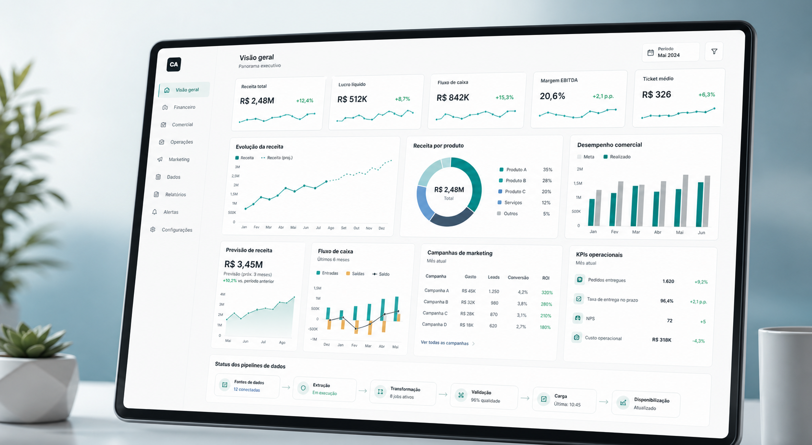

Consultoria em BI, dados, automacao e analytics
IA, dashboards e automacoes para sua empresa decidir melhor e operar com mais eficiencia.
Estruturo indicadores, integracoes e solucoes com IA aplicada para transformar dados em rotina de decisao, ganho operacional e menos trabalho manual.
Projetos pensados para uso de negocio, nao para demonstracao tecnica isolada.
Base integrada, KPI definido, dashboard publicado, automacao executando e handoff documentado.
Ferramentas escolhidas pelo contexto operacional e pelo nivel de maturidade do time.
Leitura de performance, controle, previsao e padronizacao de indicadores.
IA aplicada ao negocio
Mais do que paineis bonitos: dados conectados, automacoes rodando e insights acionaveis.
Combino Power BI, Python, SQL, APIs e IA para transformar rotinas manuais em processos analiticos mais confiaveis, rapidos e prontos para decisao.
Servicos
Como eu entro no problema e o que sua empresa recebe no final.
Cada frente abaixo parte de um objetivo de negocio e vira entrega utilizavel, com menos dependencia de processo manual e mais clareza para decidir.
Dashboards e indicadores em Power BI
Paineis executivos, financeiros e operacionais com modelagem, DAX, hierarquia de leitura e foco em tomada de decisao.
- Diagnostico dos KPIs e das fontes
- Modelagem e visual orientados a leitura gerencial
- Dashboard publicado com regra de uso
ETL, integracao de bases e automacao de carga
Consolidacao de dados com SQL, Python, APIs e cloud para reduzir planilhas paralelas e melhorar confiabilidade operacional.
- Unificacao de fontes e regras de negocio
- Rotinas de carga e validacao automatizadas
- Base preparada para analytics e BI
Automacao de processos e relatorios
Eliminacao de tarefas repetitivas com scripts, consultas e fluxos que aceleram operacao, fechamento e acompanhamento de resultados.
- Mapeamento do gargalo operacional
- Execucao automatizada com menos dependencia manual
- Padronizacao de relatorios e entregas
Analise avancada, previsao e IA aplicada
Modelos analiticos para previsao, segmentacao e leitura de comportamento com criterio de negocio, validacao e interpretacao pratica.
- Modelagem estatistica e experimentacao
- Leitura de impacto e limite do modelo
- Aplicacao em vendas, financeiro e eficiencia
Perfil de cliente
Onde esse tipo de trabalho normalmente gera mais retorno.
O melhor encaixe costuma acontecer quando o negocio ja sente o custo de consolidar dados manualmente ou esta sem visibilidade confiavel para decidir.
Empresas que acumulam fechamento manual, controles paralelos e dependencia de poucas pessoas para consolidar informacoes.
Times de lideranca que precisam olhar receita, margem, produtividade, carteira ou custo sem reconciliar dados a cada reuniao.
Equipes que ja analisam dados, mas ainda carecem de modelagem, governanca, automacao e camada executiva de apresentacao.
Cases
Projetos estruturados para mostrar problema, solucao e impacto.

Power BI + GCP + MySQL
Fev 2026 - Mar 2026
Painel de analise de mercado para o setor de combustiveis
Estruturacao de leitura comercial e operacional para acompanhar receita, margem, volume e desempenho por unidade e regiao.
Problema
Falta de visibilidade consolidada para identificar variacao de rentabilidade e oportunidade de crescimento entre unidades.
Solucao
Integracao de dados, modelagem no Power BI e leitura comparativa por periodo, produto, unidade e regiao.
Receita por periodo e regiao
Margem por produto e unidade
Power BI + Python + SQL
Dez 2025 - Jan 2026
Painel de analise de vendas com leitura de sazonalidade
Projeto para destacar padroes de consumo, ticket medio, contribuicao de produtos e variacao de performance comercial.
Problema
Baixa clareza sobre picos sazonais, concentracao de receita e leitura rapida dos produtos que mais movem o resultado.
Solucao
Analise consolidada com Python, SQL e Power BI para monitorar receita, margem, crescimento e potencial regional.
Ticket medio e sazonalidade
15% de crescimento em picos sazonais
Power BI + SQL Server
Abr 2023 - Abr 2024
Painel de gerenciamento de projetos com controle financeiro
Solucao analitica para acompanhar orcamento, progresso, aproveitamento e performance dos projetos em tempo real.
Problema
Leitura fragmentada de carteira, alocacao de recursos e desempenho dos projetos, dificultando controle e priorizacao gerencial.
Solucao
Modelagem integrada com bases financeiras e operacionais, visual de acompanhamento e indicadores por gestor e departamento.
Projetos por gestor e departamento
Receita e aproveitamento
Processo
Forma de trabalho direta, com escopo, implementacao e entrega utilizavel.
O objetivo nao e so construir a solucao. E fazer a operacao conseguir usar, confiar e evoluir depois da entrega.
Diagnostico e escopo
Mapeamento do problema, das fontes, dos indicadores criticos e do nivel de maturidade da operacao.
Arquitetura da solucao
Definicao de modelagem, integracoes, logica de negocio, periodicidade e desenho da camada analitica.
Construcao e validacao
Implementacao de pipelines, dashboards, automacoes e checagens para garantir consistencia antes do uso recorrente.
Handoff e evolucao
Publicacao, documentacao, treinamento e recomendacoes para a solucao continuar gerando valor na rotina.
Prova e stack
Base tecnica forte, mas organizada para resultado de negocio.
Experiencia em empresas de tecnologia, viagens, saude, meio ambiente e midia, conectando dados a decisao executiva e rotina operacional.
"Meu foco e tirar o dado da planilha isolada e colocar a informacao na rotina de decisao, com menos dependencia manual e mais clareza para o time."
Power BI
Python
SQL
DAX
Google Cloud
AWS
Azure
Looker Studio
ETL
APIs
Data Modeling
Machine Learning
Forecast
JavaScript
Data Storytelling
Experiencia
Trajetoria em BI, dados, automacao e analise aplicada.
Historico em contextos diferentes, com foco recorrente em consolidacao de dados, leitura gerencial, previsao e ganho operacional.
Full Business Intelligence Analyst | Neooh
BI financeiro, dashboards dinamicos, previsoes, modelagem estatistica, DAX e suporte a decisoes executivas.
Data Analyst Pl | Alvorada Ambiental
Analises preditivas, dashboards conectados a APIs, solucoes em Google Cloud e AWS, integracao de bases e otimizacao de consultas.
Analista de Software | Rapidonet Sistemas
Automacao de dados com SQL Server, solucoes analiticas integradas a sistemas operacionais e relatorios customizados.
123milhas e Premium Saude
Pipelines, relatorios avancados, scripts em Node.js, automacoes com JavaScript e suporte a indicadores operacionais.
Formacao
Bacharelado em Sistemas da Informacao
Estacio de Sa | 2020 - 2023
Pos-graduacao
MBA em Dados
DIO | 2023 - 2026
Idiomas
Ingles e Espanhol
Nivel avancado
Contato
Se fizer sentido, eu transformo seu problema de dados em um plano de entrega objetivo.
Podemos conversar sobre dashboard executivo, integracao de bases, automacao de rotina, leitura financeira, previsao ou estruturacao de indicadores.